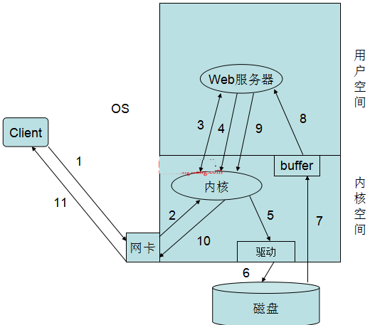
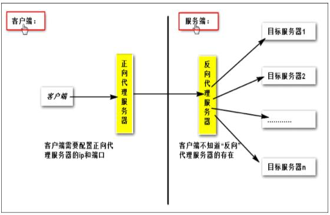
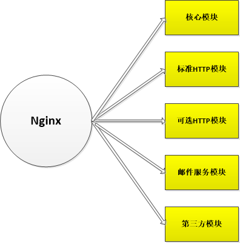
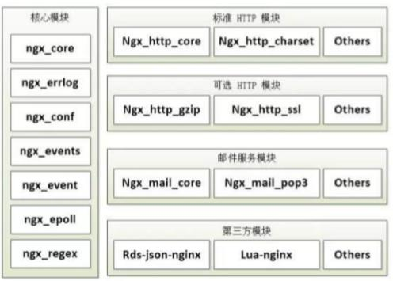
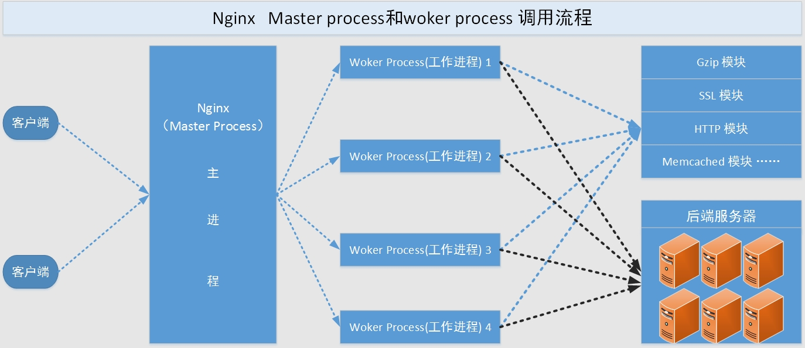
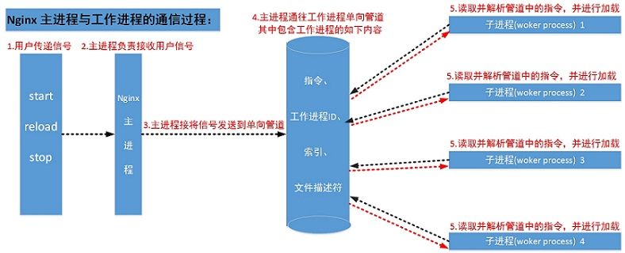

基础知识
1.一个Web请求的处理过程

用户请求-->送达到用户空间-->系统调用-->内核空间-->内核到磁盘上读取网页资源->返回到用户空间->响应给用户
客户端向Web服务请求过程，在这个过程中，有两个I/O过程，一个就是客户端请求的网络I/O，另一个就是Web服务器请求页面的磁盘I/O
2.I/O模型：
阻塞型、非阻塞型、复用型、信号驱动型、异步
3.web请求处理机制
1).在网络通信中同步和异步是描述通信模式的概念，关注消息通知机制
同步：发送方发送完请求后，需要等待接收到接收方发回的响应，才能发送下一个请求
异步：发送方发出一个请求后，不等接收方响应这个请求，就继续发送下一个请求，被调用者通过状态、通知或回调机制通知调用者被调用者的运行状态；
2).网络通信中主要指套接字socket的阻塞和非阻塞，而socket的实质就是IO操作。关注调用者在等待结果返回之前所处的状态；
阻塞：blocking，调用结果返回之前，调用者被挂起；等到调用结果返回之后才进入就绪状态，获取CPU后继续执行
非阻塞：nonblocking，调用结果返回之前，调用者不会被挂起,立即返回执行下一个调用
一次文件IO请求，都会由两阶段组成：
第一步：等待数据，即数据从磁盘到内核内存；
第二步：复制数据，即数据内核内存到进程内存
3.资源类型：
静态:一般客户端发送请求到web服务器，web服务器从内存在取到相应的文件，返回给客户端，客户端解析并渲染显示出来。
css,js,jpg.text...
动态：一般客户端请求的动态资源，先将请求交于web容器，web容器连接数据库，数据库处理数据之后，将内容交给web服务器，web服务器返回给客户端解析渲染处理。
php,jsp
4.数据类型
结构化数据：mysql
半结构化数据：json,xml
非结构化数据:分布式存储（SDS）
5.httpd MPM：multi-processing module多路处理模块
prefork：进程模型，两级结构，主进程master负责生成子进程，每个子进程负责响应一个请求；默认模型
worker：线程模型，三级结构，主进程master负责生成子进程，每个子进程负责生成多个线程，每个线程响应一个请求；
event：事件驱动模型,基于异步I/O模型主进程master负责生成子进程，每个子进程响应多个请求；
Nginx
Nginx启动特别容易,并且几乎可以做到7*24不间断运行，即使运行数个月也不需要重新启动. 你还能够不间断服务的情况下进行软件版本的升级
Nginx是一款优秀的web服务器和反向代理服务器，基于nginx我们可以搭建一个强大的web服务器，也可以把nginx作为反向代理服务器而实现负载均衡、动静分离等功能
Nginx因具有高并发（特别是静态资源）占用系统资源少等特性
nginx的功用：
静态的web资源服务器；(图片服务器，或js/css/html/txt等静态资源服务器)
结合FastCGI/uwSGI/SCGI等协议反代动态资源请求；
http/https协议的反向代理；
imap/pop3协议的反向代理；
tcp/udp协议的请求转发；

nginx与apache比较
nginx的基本特性
对静态资源高速高并发访问及缓存
支持FastCGI、Uwsgi、SCGI、Memcache Server的加速和缓存
支持SSL、TLS、SNI
具有模块化的架构：过滤器包括gzip压缩、rangs支持、chunked响应、XSLT、SSI及图像缩放等功能。在SSI过滤中，一个包含多个SSI的页面，如果经由FastCGI或反向代理，可被并行处理。
支持邮件服务代理
资源消耗少：在3万并发连接下，开启10个nginx线程消耗的内存不到200MB
可以做HTTP反向代理及加速缓存，即负载均衡功能，内置对RS节点服务器健康检查功能，这相当于专业的Haproxy软件或LVS的功能
具备Squid等专业缓存软件等的缓存功能
支持异步网络I/O时间模型epoll
apache软件的特点
Apache2.2版本非常稳定强大，性能好。
prefork模式取消了进程开销
处理动态业务数据时，因关联到后端的引擎和数据库，瓶颈不在Apache上
高并发时消耗资源相对多一些
基于传统的select模型，高并发能力有限
支持扩展库，可以通过DSO、apxs方法编译安装额外的插件功能，不需要重新编译Apache
功能多，更稳定，更安全，插件也多
市场份额逐渐递减
Apache使用的是传统的select模型
静态业务：
若是高并发场景，尽量采用nginx或Lighttpd，首选nginx
动态业务：
理论上采用nginx和Apache均可，为了避免相同业务服务软件多样化，增加维护成本
既有动态又有静态：
选用nginx
Nginx程序架构：
master/worker
一个master进程：
负载加载和分析配置文件、管理worker进程、平滑升级
一个或多个worker进程
不应不大于cpu核心数
单进程处理并响应用户多请求
主要通过“共享内存”的机制实现进程间通信
一个进程响应一个任务，都是串行模式
缓存相关的进程：
cache loader：载入缓存对象
cache manager：管理缓存对象
特性：异步、事件驱动和非阻塞
并发请求处理：通过epoll/select
文件IO：高级IO sendfile，异步，mmap
模块化设计，较好的扩展性 高可靠性
支持热部署：不停机更新配置文件，升级版本，更换日志文件
低内存消耗：10000个keep-alive连接模式下的非活动连接，仅需2.5M内存
Nginx的模块化

nginx模块：高度模块化，但其模块早期不支持DSO机制；近期版本支持动态装载和卸载；
模块分类：
核心模块：core module
标准模块：
HTTP modules：
Standard HTTP modules
Optional HTTP modules
Mail modules
Stream modules：
传输层代理
第三方模块 party modules
一般以Ngx_作为前缀，——module作为后缀，中间使用一个或者多个英文单词描述模块的工能，例如Ngx_core_module表示该模块提供Nginx的核心功能等
参考文档

Nginx模块组织工作图

web请求处理机制
1、多进程方式：服务器没接受到一个客户端请求就有服务器的主进程生成一个子进程响应客户端，直到用户关闭连接，这样的优势是处理速度快，子进程之间相互独立，但是如果访问过大会导致服务器资源耗尽而无法提供请求。
2、多线程方式：与多进程方式类似，但是每收到一个客户端请求会有服务进程派生出一个线程来个客户方进行交互，一个线程的开销远远小于一个进程，因此多线程方式在很大程度减轻了web服务器对系统资源的要求，但是多线程也有自己的缺点，即当多个线程位于同一个进程内工作的时候，可以相互访问同样的内存地址空间，所以他们相互影响，一旦主进程挂掉则所有子线程都不能工作了，IIS服务器使用了多线程的方式，需要间隔一段时间就重启一次才能稳定。
Nginx服务器的一个显著的优势就是能够同时处理大量的并发请求。它结合多进程机制和异步机制。异步机制使用的是异步非阻塞方式。（Master-Worker)。
每个工作进程使用异步非阻塞方式，可以处理多个客户端请求。当某个工作进程接收到客户端的请求以后，调用IO进行处理，如果不能立即得到结果，就去处理其他的请求；
而客户端在此期间也无需等待响应，可以去处理其他事情；
当IO返回时，就会通知此工作进程；该进程得到通知，暂时挂起当前处理的失误去响应客户端请求。
异步可以理解为循环处理多个准备好的事件，不会导致无谓的资源浪费，当有更多的并发数只会占用更多的内存而已
事件驱动模型
Nginx服务器的工作进程调用IO后，就取进行其他工作了；当IO调用返回后，会通知工作进程。
但IO调用时如何把自己的状态通知给工作进程的呢？
1.让工作进程在进行其他工作的过程中间隔一段时间就去检查一下IO的状态，如果完成就响应客户端，如果未完成，继续工作
2.IO调用在完成后能主动通知工作进程
他们提供了一种机制就只让进程同时处理多个并发请求，不用关心IO调用的具体状态。IO调用完全由事件驱动模型来管理
Nginx采用事件驱动处理库（多路IO复用），最常用的就是select模型，poll模型，epoll模型
复用型IO（多路IO）
1.用户请求与内核处理之间有一个内核中的select()，poll()
3.相当于在内核中加了一个助理，能把请求分发给内核中不同的功能去处理，但是实际也是阻塞的，阻塞在select上，并没阻塞在用户进程上，所以还可以进行别的IO请求
4.当用户进程调用了select，那么整个进程会被block，而同时，kernel会“监视”所有select负责的socket，当任何一个socket中的数据准备好了，select就会返回。这个时候用户进程再调用read操作，将数据从kernel拷贝到用户进程。
5.所以，I/O 多路复用的特点是通过一种机制一个进程能同时等待多个文件描述符，而这些文件描述符fd（套接字描述符）其中的任意一个进入读就绪状态，通知应用程序进程
nginx使用最新的epoll和异步网络I/O模型，，能够处理大量连续的读写请求
架构简介

1.Nginx启动后，会产生一个主进程，主进程执行一系列的工作后会产生一个或者多个工作进程
2.在客户端请求动态站点的过程中，Nginx服务器还涉及和后端服务器的通信。Nginx将接收到的Web请求通过代理转发到后端服务器，由后端服务器进行数据处理和组织；
3.Nginx为了提高对请求的响应效率，降低网络压力，采用了缓存机制，将历史应答数据缓存到本地。保障对缓存文件的快速访问
工作进程
工作进程的主要工作有以下几项：
接收客户端请求；
将请求一次送入各个功能模块进行过滤处理；
IO调用，获取响应数据；
与后端服务器通信，接收后端服务器处理结果；
数据缓存
响应客户端请求；
进程交互
Nginx服务器在使用Master-Worker模型时，会涉及到主进程和工作进程的交互和工作进程之间的交互。这两类交互都依赖于管道机制。
1.Master-Worker交互
这条管道与普通的管道不同，它是由主进程指向工作进程的单向管道，包含主进程向工作进程发出的指令，工作进程ID等；同时主进程与外界通过信号通信；
2.worker-worker交互
这种交互是和Master-Worker交互是基本一致的。但是会通过主进程。工作进程之间是相互隔离的
Nginx 进程的功能和进程间的通信
1、主进程(woker process)的功能：
读取Nginx 配置文件并验证其有效性和正确性
建立、绑定和关闭socket连接
按照配置生成、管理和结束工作进程
接受外界指令，比如重启、升级及退出服务器等指令
不中断服务，实现平滑升级，重启服务并应用新的配置
开启日志文件，获取文件描述符
不中断服务，实现平滑升级，升级失败进行回滚处理
编译和处理perl脚本
2、工作进程（woker process）的功能
接受处理客户的请求
将请求以此送入各个功能模块进行处理
IO调用，获取响应数据
与后端服务器通信，接收后端服务器的处理结果
缓存数据，访问缓存索引，查询和调用缓存数据
发送请求结果，响应客户的请求
接收主程序指令，比如重启、升级和退出等
Ninx进程间的通信
1.主进程和工作进程之间的通信：
(1)工作进程是有主进程生成的，主进程使用fork()函数，在Nginx服务器启动过程中主进程根据配置文件决定启动工作进程的数量，然后建立一张全局的工作表用于存放当前未退出的所有的工作进程，主进程生成工作进程后会将新生成的工作进程加入到工作进程表中，并建立一个单向的管道并将其传递给工作进程，该管道与普通的管道不同，它是由主进程指向工作进程的单项通道，包含了主进程想工作进程发出的指令、工作进程ID、工作进程在工作进程表中的索引和必要的文件描述符等信息。
(2)主进程与外界通过信号机制进行通信，当接收到需要处理的信号时，它通过管道向相关的工作进程发送正确的指令，每个工作进程都有能力捕获管道中的可读事件，当管道中有可读事件的时候，工作进程就会从管道中读取并解析指令，然后采取相应的执行动作，这样就完成了主进程与工作进程的交互。

2.工作进程与工作进程之间的通信
(1)工作进程之间的通信原理基本上和主进程与工作进程之间的通信是一样的，只要工作进程之间能够取得彼此的信息，建立管道即可通信，但是由于工作进程之间是完全隔离的，因此一个进程想要直到另外一个进程的状态信息就只能通过主进程来设置了。
(2)为了实现工作进程之间的交互，主进程在生成工作进程只之后，在工作进程表中进行遍历，将该新进程的ID以及针对该进程建立的管道句柄传递给工作进程中的其他进程，为工作进程之间的通信做准备，当工作进程1向工作进程2发送指令的时候，首先在主进程给它的其他工作进程工作信息中找到2的进程ID，然后将正确的指令写入指向进程2的管道，工作进程2捕获到管道中的事件后，解析指令并进行相关操作，这样就完成了工作进程之间的通信。
配置更新和NGINX升级
仅包含少量工作进程的NGINX进程架构，使得配置、甚至是二进制文件本身的更新都非常高效
更新NGINX的配置，是一个非常简单的、轻量级的、可靠的操作。运行nginx –s reload命令即可，该命令会检查磁盘上的配置，并给主进程发送一个SIGHUP信号
当主进程接收到SIGHUP信号后，会做两件事：
1. 重新加载配置，fork一套新的工作进程。这些新的工作进程会立即开始接受连接和处理流量（traffic）（使用新的配置）。
2. 发出信号，通知旧的工作进程安静地退出。这些旧进程不会再接受新的连接了。只要它们处理的HTTP请求结束了，它们就会干净地关闭连接。一旦所有的连接都被关闭，工作进程也就退出了。
这个过程会导致CPU占用率和内存使用的一个小高峰，但相比于从活动连接中加载资源，这个小高峰可忽略不计。你可以在一秒内重新加载配置多次。极少情况下，一代又一代工作进程等待连接关闭时会出现问题，但即便出现问题，它们也会被立即解决掉。
NGINX的二进制升级过程更加神奇——你可以飞速地升级NGINX本身，服务器不会有任何的丢连接、宕机、或服务中断等情况。
二进制升级过程与配置更新相似。新的NGINX主进程与原来的主进程并行，它们共享监听套接字。两个进程都是活跃的（active），它们各自的工作进程处理各自的流量（traffic）。然后，你可以通知旧的主进程与其工作进程完美退出